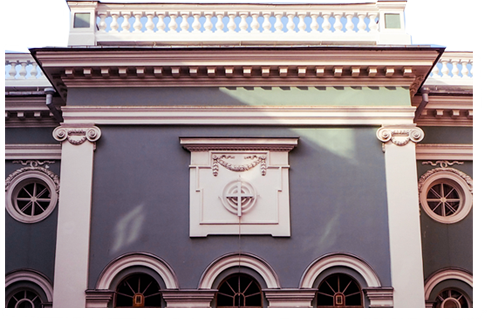

О ЗДАНИИ
СТИЛЬ,
ВНЕШНИЙ ВИД
И
ОСОБЕНОСТИ
ЦЕРКВИ
ВНЕШНИЙ ВИД
И
ОСОБЕНОСТИ
ЦЕРКВИ
О СТИЛЕ
Классицизм – художественное и архитектурное направление в мировой культуре 17-19 веков, где образцом для подражания и творческим ориентиром стали эстетические идеалы античности. Зародившись в Европе, течение активно повлияло также на развитие российского
градостроения.
Во внешнем виде зданий признаки классического стиля узнать легко:
-ясные пространственные решения,
-строгие формы,
-лаконичная внешняя отделка,
-мягкая цветовая гамма.
Одна из основных черт классицизма в архитектуре – обращение к античной ордерной системе. В переводе с латинского ordo означает "строй, порядок", термин применяли к пропорциям древних храмов между несущими и несомыми частями: колоннами и антаблементом (верхним перекрытием).
К элементам классической архитектуры относятся:
-Ордерность превратилась в ведущую черту классицизма в архитектуре.
-Симметричная композиция – обязательный элемент классики в архитектуре, тесно связанный с ордерностью. Здания должны были быть симметричны относительно центральной оси, такая же симметрия прослеживалась в каждом отдельно взятом фрагменте.
-Правило золотого сечения (образцовое соотношение высоты и ширины) определило гармоничные пропорции зданий.
-Ведущие приемы декора: украшения в виде барельефов с медальонами, лепные растительные орнаменты, арочные проемы, оконные карнизы, греческие статуи на крышах. Чтобы подчеркнуть белоснежные декоративные элементы, цветовую гамму для отделки выбирали в светлых пастельных оттенках.
-Среди особенностей классической архитектуры – оформление стен по принципу ордерного членения на три горизонтальные части: нижняя – цоколь, в середине – основное поле, вверху – антаблемент. Карнизы над каждым этажом, оконные фризы, наличники разной формы, как и вертикальные пилястры, создавали живописный рельеф фасада.
-Дизайн парадного входа включал мраморные лестницы, колоннады, фронтоны с барельефами.
Свернуть
-ясные пространственные решения,
-строгие формы,
-лаконичная внешняя отделка,
-мягкая цветовая гамма.
Одна из основных черт классицизма в архитектуре – обращение к античной ордерной системе. В переводе с латинского ordo означает "строй, порядок", термин применяли к пропорциям древних храмов между несущими и несомыми частями: колоннами и антаблементом (верхним перекрытием).
К элементам классической архитектуры относятся:
-Ордерность превратилась в ведущую черту классицизма в архитектуре.
-Симметричная композиция – обязательный элемент классики в архитектуре, тесно связанный с ордерностью. Здания должны были быть симметричны относительно центральной оси, такая же симметрия прослеживалась в каждом отдельно взятом фрагменте.
-Правило золотого сечения (образцовое соотношение высоты и ширины) определило гармоничные пропорции зданий.
-Ведущие приемы декора: украшения в виде барельефов с медальонами, лепные растительные орнаменты, арочные проемы, оконные карнизы, греческие статуи на крышах. Чтобы подчеркнуть белоснежные декоративные элементы, цветовую гамму для отделки выбирали в светлых пастельных оттенках.
-Среди особенностей классической архитектуры – оформление стен по принципу ордерного членения на три горизонтальные части: нижняя – цоколь, в середине – основное поле, вверху – антаблемент. Карнизы над каждым этажом, оконные фризы, наличники разной формы, как и вертикальные пилястры, создавали живописный рельеф фасада.
-Дизайн парадного входа включал мраморные лестницы, колоннады, фронтоны с барельефами.
ВНЕШНИЙ ВИД И ОСОБЕННОСТИ ЦЕРКВИ
Архитектор Юрий Фельтен при проектировке придумал достаточно интересную особенность: церковь имеет два почти равнозначных фасада, выходящих на Кирочную и Фурштатскую улицы.
В целом здание выглядит весьма канонично, однако имеет пышное украшение в виде стоящих полукругом колонн ионического ордера и круглой шестигранной башенки, венчающей кирху. Колоннада поддерживает своды просторного зала, вмещающего около полутора тысяч
человек одновременно.

Фасад, который достался Кирочной, выглядит строго: прямой, с витражами в круглых окнах и огромным светящимся крестом на фоне чёрно-белых концентрических кругов. На дверях — афиши предстоящих мероприятий.
Интерьеры церкви остались такими же, какими были после пожара — необычный антураж привлекает внимание горожан и туристов.
Основную часть первого этажа занимает большой зал со сценой — здесь и проходит большинство светских мероприятий. Это же и основное выставочное пространство: выставки бывают и на околорелигиозную тематику, и вполне светские — про Петербург и окрестности.
На втором этаже — фойе с небольшим кафе. Из фойе можно пробраться на балкон главного зала.
Через фойе можно пройти в зал для богослужений и проповедей и кухню, которые отремонтированы и в которых даже есть витражи на библейскую тематику.
Важнейшим украшением этого места является большая алтарная картина «Вознесение Христа», выполненная Э. Липгартом.
Также интересной особенностью данного здания является крест, который находится на лестнице Анне Кирхе и подсвечивается разными цветами, создавая необычную атмосферу.